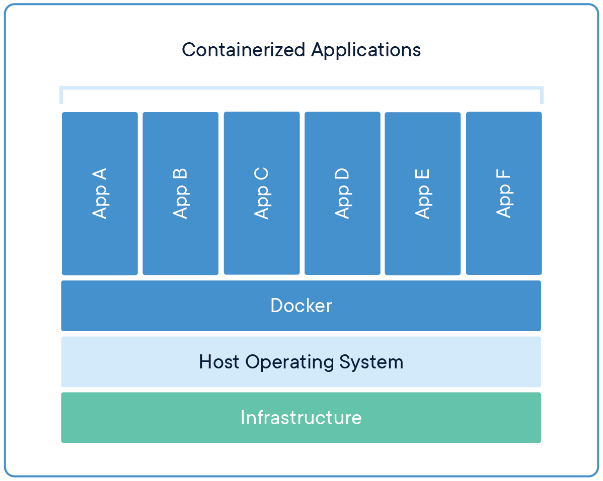
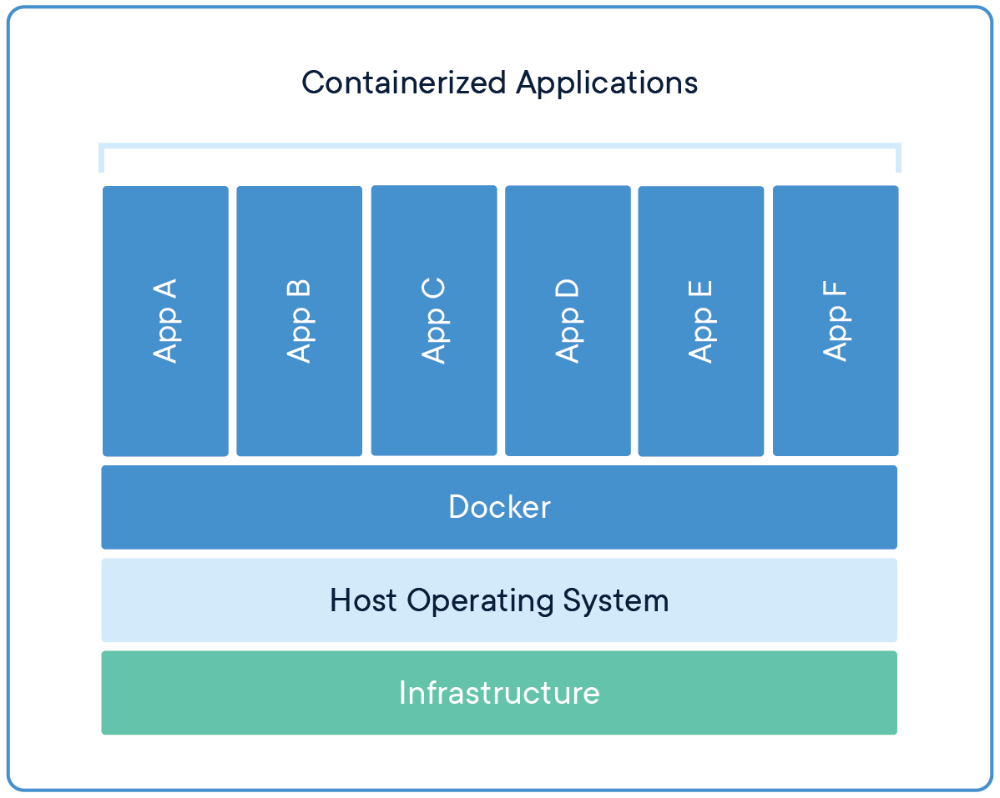
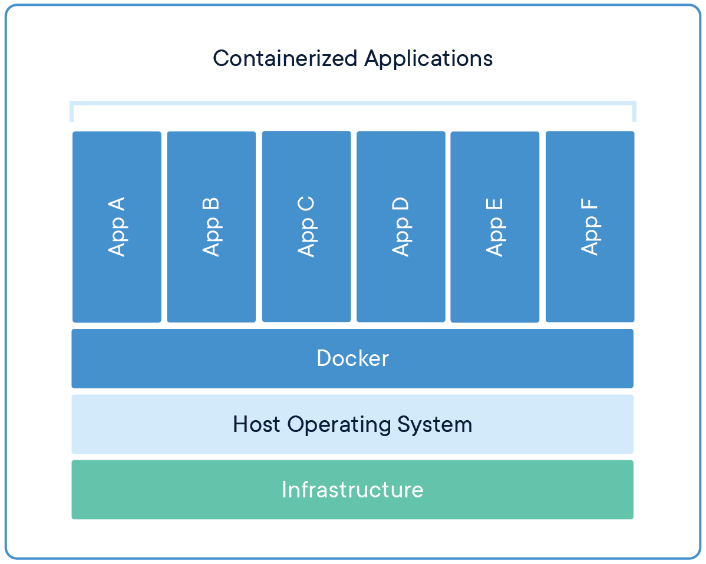

Виртуальные машины vs. Контейнеры
 

Powered by Shower
Доклад Дмитрия Захарова

FROM python:3.7-alpine
WORKDIR /app
COPY . /app
RUN pip install -r requirements.txt
EXPOSE 80
ENV NAME World
CMD ["python", "app.py"]
version: '3'
services:
web:
build: .
ports:
- "5000:5000"
redis:
image: "redis:alpine"